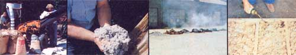
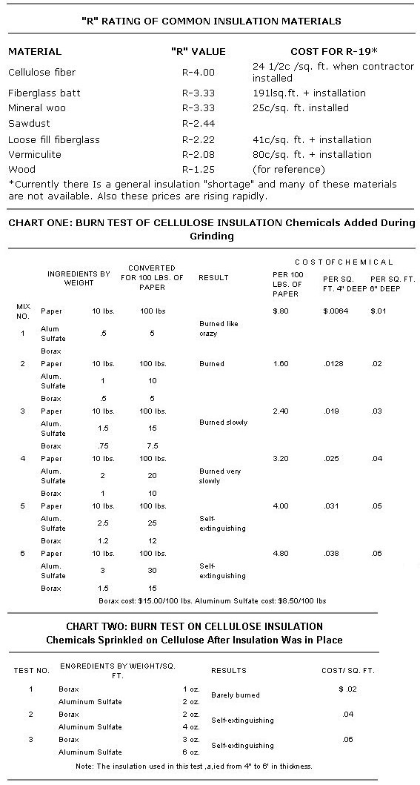

Sometimes it's going to happen for the "right" reason (genuine dwindling reserves of the easily tapped fossil fuels on which our society has become so desperately hooked). Sometimes it's going to happen for the "wrong" reasons (Carter's fiasco of massive new government meddling and crushing taxes masquerading as an energy "plan", say, or profiteering by the utilities, multinational corporations, and others who supply the oil, gas, coal, electricity, etc., that we all use). And sometimes it's going to happen for both the right and the wrong reasons at the same time.
But for whatever reason or combination of reasons it takes place, there's no question about what's going to happen: The price of all the "traditional" (fossil fuel and fossil fuelderived) energy you use from now on is going to go in just one direction ... UP!
Oh, there'll be welcome little short-term reversals of that basic trend from time to time. (Right now, for instancethanks to new production from Britain's North Sea fields, Mexico's sudden exports of oil, the opening of the North Slope in Alaska, increased pumping in Saudi Arabia last summer, and some other factors-the world is mildly awash in petroleum, and there's some rather frantic oil and gasoline price cutting going on behind the scenes.)
For all practical purposes, though, these fleeting discombobulations can be ignored (after, of course, you've taken maximum advantage of them whenever they present themselves). Keep your eye on the basic trend. And that very basic and very, very strong trend-now, and for as far into the future as you can possibly care to peer-is for the price of all "traditional" forms of energy to rise and rise and to keep on rising.
Then again, there's nothing engraved on-a stone tablet anywhere that says you have to remain a big-time captive customer of the fossil fuel industry in the first place.
You might, for example, build and move into an Andy Davis-type underground house (see The Plowboy Interview in MOTHER NO. 46) ... and then sail completely through the coldest winter in over 100 years (the winter of 1976-77) on only $1.29 worth of heating fuel the way Andy just did.
Or you might have David Wright, who now lives in a 93% heating and cooling self-sufficient home of his own design (see The Plowboy Interview in MOTHER NO. 47) draw up a set of plans for your family.
You could even have Jesse J. Savell (See "Here's a Passively Heated and Cooled House That You Can Afford ... and Will Want") put up one of his energymiser dwellings for you.
"Well, that's all very nice," a number of you have recently told us, "and we certainly thank MOTHER for bringing these new breakthroughs in energyefficient housing to our attention. But we can't afford a place like that just now. We're going to have to stay where we are for a while. And we aren't even sure we can afford that! What can we do right now to cut the amount of energy we'll have to use to keep our current home warm this winter? And don't tell us to have insulation installed ... because we can't afford a bill for $300 or $400 or more for that either and, besides, most of the contractors who install insulation have a backlog of orders as it is."
But who says you have to pay today's outrageous prices for insulation? (One contractor we know hiked his prices three times in the month of August alone!) And who says you have to put your name in the pot and then patiently wait days or even weeks until an insulating firm can get to you?
Nobody, that's who! Not when you can quickly, safely, and easily manufacture one of the best insulations ever devised. Not when you can make that insulation to equal or far exceed the specifications (fireproofing, vermin- proofing, etc.) of any manufacturer in the field. And not when you can do it all by yourself in your spare time and for just one-fifth or less of the out-of-pocket cost of what a probably inferior insulation would set you back if you hired a contra ctor to install it for you.
Yeah, sure. This all sounds too good to be true. But that's only because you've spent your whole life being brainwashed into The Perfect Little Consumer. And that's not your fault. Nowadays, even the mechanics and shop magazines (which, 30 years ago, would have given you exactly the sort of information that MOTHER is now gonna lay on you) maintain the polite-and, for you, expensive!-fiction that insulation somehow isn't actually insulation unless it comes in a trademarked bag and a "real" contractor installs it for you.
Well, folks, that particular myth just ain't true. There may well be a bewildering selection of insulations on the current market. And some of them definitely are more fireproof ... or more vermin-proof ... or more water resistant ... or easier to install in new construction ... or easier to blow into old walls ... or more this or less that than any of the others. But when it comes to downright cost effectiveness (even at contractor's prices), allaround availability, ease of installation under almost any conditions, minimum toxicity, and absolute minimum use of the planet's resources in a highly "natural" way ... the all-time winner and champion always has, still is, and probably always will be ... plain ole cellulose fiber.
Yep. Cellulose fiber. Which is nothing but old newspapers, cardboard boxes, and other kinds of waste paper ... ground up fine ... and treated with some readily available and inexpensive chemicals to make it self- extinguishing and verminproof.
It's hard to think of a more readily available, a simpler, or a less costly insulation ... yet the "R" factor (the higher the "R", the better) of each inch of cellulose fiber is a very respectable 4. Even when you buy it ready-made, then, this is an extremely costeffective insulation. And when you make it yourself your savings can really skyrocket!
That " makin' " is not in the least complicated either. as MOTHER's researchers recently proved to themselves. It mainly consists of [1] gathering together enough bone-dry scrap cardboard or old newspapers, [2] running them through a farm-type haMmermill set for its finest possible grind, [3] mixing in-either before or after the cellulose is groundenough fireproofing and vermin repellent to protect it, and [4] putting the finished insulation where you want it.
The only "complication" we've found about this whole do-it-yourself project is that nothing less than a real, live, genuine hammermill will handle the grinding of the cellulose the way it should be handled. Little garden mulcher-type "shredder grinders" simply won't chew either paper or cardboard into the fluffy, fuzzy mass of fibers that makes the best insulation. (Rule of thumb: If you can still read whole words on your ground newsprint, it wasn't ground finely enough.)
What you want to do then (if you don't already have one) is rent or borrow or barter some time on one of the feed-grinding hammermills that many farmers own (the units are very much like the leaf grinders and limb shredders that you frequently see utility line crews using alongside the road).
Take care, too, to see that all the paper and cardboard you feed through the grinder is bone dry and stays that way (moisture can cause the shredded cellulose to "compost"). And always wear a respirator mask to protect your lungs from both paper dust and fine chemical particles as you work.
That last caution, by the way, is by no means meant to suggest that the chemicals used to treat the cellulose are in any way highly dangerous. Boric acid, the fire retardant used by most manufacturers of this insulation, is-as you probably know-so mild that doctors have frequently prescribed it as an eyewash. This particular fireproofer is now in such short supply, however (because of the current tremendous demand for insulation), that MOTHER's research crew has tested and presently recommends fireproofing cellulose insulation with borax. And borax, as you're surely aware, is so safe that it's the major ingredient in some laundry soaps.
The aluminum sulfate listed here as a rodent and insect repellent can best be put into perspective when you realize that it's one of the chemicals generally called "alum" (even though the term is more accurately descriptive of a double sulfate of ammonium or a univalent metal-such as sodium or potassium-and of a trivalent metal, such as aluminum, iron, or chromium). The chemical, in short, is an astringent and, as such, may be safely handled without gloves (although we do recommend keeping its dust out of your lungs and away from your mucous membranes). Do bear in mind, however, that aluminum sulfate is highly corrosive to most metals ... and, for this reason, an equal weight of ordinary lime (which neutralizes the alum) should be substituted for half the aluminum sulfate when your treated insulation will be used in metal buildings or mobile homes.
As the first chart reproduced here indicates, MOTHER's researchers ground up and tested six batches of cellulose fiber ... each of which contained a different percentage of vermin repellent and fireproofing. After trying to ignite all the test mixes with a propane torch and observing the results (see chart) , we recommend that a minimum of 25 pounds of aluminum sulfate (or half aluminum sulfate and half lime) and 12 pounds of borax be mixed into every 100 pounds of ground newsprint or cardboard.
This figures out to a total chemical cost (at $8.50/100 pounds for aluminum sulfate and $15.00/100 pounds for borax) of less than $4.00 per 100 pounds of paper that is treated ... or 5 cents a square foot when an attic is filled with a 6"-deep layer of the cellulose fiber (which produces a total "R" factor of 24, and that's very good). This compares quite favorably to the 24-1/2 cents a square foot that a local contractor charges to fill an attic space with only 5" of a commercially manufactured cellulose fiber. On a 1,300-square-foot house, that's an immediate saving of $253.50 right there ... and you're getting one-fifth more insulation to boot!
The chemicals were mixed into our first six test batches by shaking them onto the paper as it was fed into our hammermill. This is exactly the method used by the commercial manufacturers of cellulose fiber insulation that we've visited ... but it does have a minor drawback: The chemicals do tend to settle out of the mix as it's handled and, if some care isn't taken, more of the fire retardant than we like to see will wind up at the bottom of any space filled with this insulation.
For this reason we tried grinding some cellulose all by itself, putting it in a pile, and then sprinkling controlled amounts of borax and aluminum sulfate across the surfaces of the fiber. We were figuring, of course, thatsince flames burn up-it would take less of the chemicals to fireproof the pulverized insulation if those chemicals were put on top of the cellulose, instead of being allowed to sift to its bottom.
The idea seems to have merit and our propane torch tests indicate that approximately another one cent in chemical costs can be shaved off every square foot of 6"-thick attic insulation with no reduction in fireproofing value when this method of distributing the borax and aluminum sulfate is used. That increases the saving on the cellulose fiber's installation cost for 1,300-square-foot house from $253.50 to $266.50. Not a great additional saving, to be sure, but one that you should know about.
MOTHER's homemade cellulose proved just as easy-no more and no lessto install as its commercially available counterpart. It's extremely easy to pour and spread around between the joists and other structures of an attic. And it's just as easy to add even more later, anytime you wish.
Putting the insulation into walls and other closed spaces is somewhat more difficult. This usually requires that a series of holes be drilled through a house's exterior siding (or that some of the siding actually be removed) so the material can be forced into the cavities with an insulation blower. Building supply stores sometimes have these blowers for rent ... and some clever do-it-yourselfers have actually forced their cellulose into walls with a hose attached to the exhaust end of a heavyduty vacuum cleaner.
One final point: Any cellulose insulation-whether of the store-bought or I-made-it-myself variety-will absorb moisture when exposed to dampness of any kind. This, of course, reduces the material's "R" value ... and cellulose fibers should be used to insulate only those attics, walls, crawl spaces, etc., that you know will remain dry.
|
 MOTHER researchers grind those papers...the finished product...main fire test in process...and fire test of ""sprinkled"" cellulose. |
 |
|